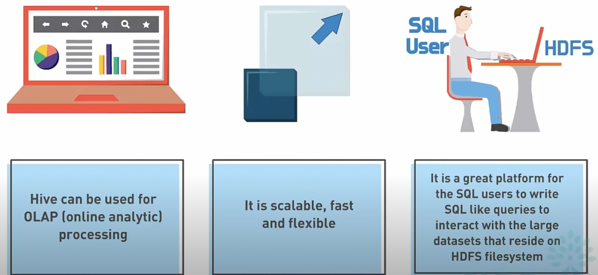
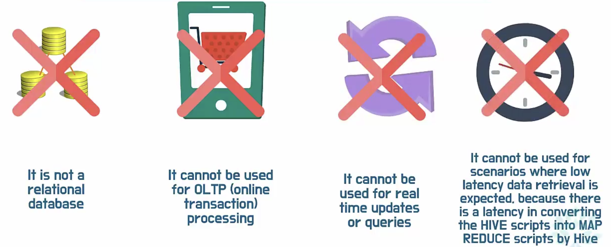
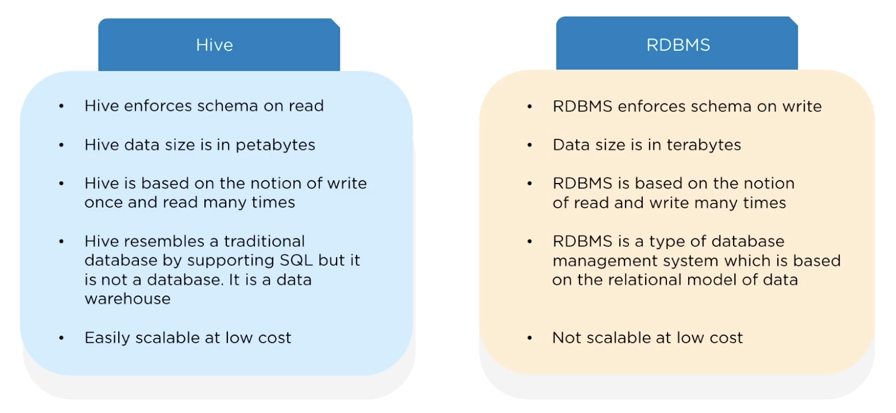
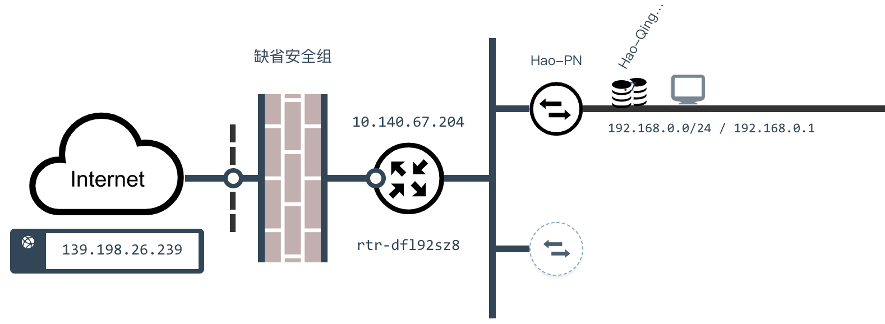
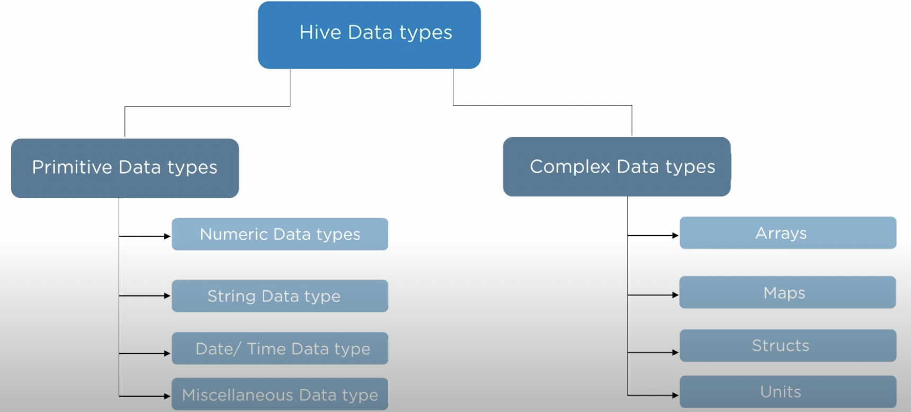

Hive简介
Hive 是 Facebook 开源的一款基于 Hadoop 的数据仓库工具，目前由 Apache 软件基金会维护，它是应用最广泛的大数据处理解决方案，它能将 SQL 查询转变为 MapReduce（Google提出的一个软件架构，用于大规模数据集的并行运算）任务，对 SQL 提供了完美的支持，能够非常方便的实现大数据统计。

说明：可以通过https://www.edureka.co/blog/hadoop-ecosystem来了解 Hadoop 生态圈。
如果要简单的介绍 Hive，那么以下两点是其核心：
- 把 HDFS 中结构化的数据映射成表。
- 通过把 HQL 进行解析和转换，最终生成一系列基于 Hadoop 的 MapReduce 任务或 Spark 任务，通过执行这些任务完成对数据的处理。也就是说，即便不学习 Java、Scala 这样的编程语言，一样可以实现对数据的处理。
Hive的应用场景。


Hive和传统关系型数据库的对比如下图和下表所示。

| Hive | RDBMS | |
|---|---|---|
| 查询语言 | HQL | SQL |
| 存储数据 | HDFS | 本地文件系统 |
| 执行方式 | MapReduce / Spark | Executor |
| 执行延迟 | 高 | 低 |
| 数据规模 | 大 | 小 |
准备工作
搭建如下图所示的大数据平台。
通过Client节点（跳板机）访问大数据平台。

创建文件Hadoop的文件系统。
hdfs dfs -mkdir /user/root
- 将准备好的数据文件拷贝到Hadoop文件系统中。
hdfs dfs -put /home/ubuntu/data/* /user/root
- 进入 hive 命令行。
hive
建库建表
- 创建。
create database eshop;
- 删除。
drop database eshop cascade;
- 切换。
use eshop;
数据类型
Hive的数据类型如下所示。

基本数据类型：
| 数据类型 | 占用空间 | 支持版本 |
|---|---|---|
| tinyint | 1-Byte | |
| smallint | 2-Byte | |
| int | 4-Byte | |
| bigint | 8-Byte | |
| boolean | ||
| float | 4-Byte | |
| double | 8-Byte | |
| string | ||
| binary | 0.8版本 | |
| timestamp | 0.8版本 | |
| decimal | 0.11版本 | |
| char | 0.13版本 | |
| varchar | 0.12版本 | |
| date | 0.12版本 |
复合数据类型：
| 数据类型 | 描述 | 例子 |
|---|---|---|
| struct | 和C语言中的结构体类似 | struct<first_name:string, last_name:string> |
| map | 由键值对构成的元素的集合 | map<string,int> |
| array | 具有相同类型的变量的容器 | array<string> |
- 创建内部表。
create table if not exists dim_user_info
(
user_id string,
user_name string,
sex string,
age int,
city string,
firstactivetime string,
level int,
extra1 string,
extra2 map<string,string>
)
row format delimited fields terminated by '\t'
collection items terminated by ','
map keys terminated by ':'
lines terminated by '\n'
stored as textfile;
- 加载数据。
load data local inpath '/home/ubuntu/data/user_info/user_info.txt' overwrite into table dim_user_info;
或
load data inpath '/user/root/user_info.txt' overwrite into table dim_user_info;
- 创建分区表。
create table if not exists fact_user_trade
(
user_name string,
piece int,
price double,
pay_amount double,
goods_category string,
pay_time bigint
)
partitioned by (dt string)
row format delimited fields terminated by '\t';
- 提供分区数据。
hdfs dfs -put /home/ubuntu/data/user_trade/* /user/hive/warehouse/eshop.db/fact_user_trade
- 设置动态分区。
set hive.exec.dynamic.partition=true;
set hive.exec.dynamic.partition.mode=nonstrict;
set hive.exec.max.dynamic.partitions=10000;
set hive.exec.max.dynamic.partitions.pernode=10000;
- 修复分区。
msck repair table fact_user_trade;
查询
基本语法
-- 查询北京女用户的姓名取前10个
select user_name from dim_user_info where city='beijing' and sex='female' limit 10;
-- 查询2019年3月24日购买了food类商品的用户名、购买数量和支付金额（不聚合）
select user_name, piece, pay_amount from fact_user_trade where dt='2019-03-24' and goods_category='food';
-- 统计用户 ELLA 在2018年的总支付金额和最近最远两次消费间隔天数
select sum(pay_amount) as total, datediff(max(from_unixtime(pay_time, 'yyyy-MM-dd')), min(from_unixtime(pay_time, 'yyyy-MM-dd'))) from fact_user_trade where year(dt)='2018' and user_name='ELLA';
group by
-- 查询2019年1月到4月，每个品类有多少人购买，累计金额是多少
select goods_category, count(distinct user_name) as total_user, sum(pay_amount) as total_pay from fact_user_trade where dt between '2019-01-01' and '2019-04-30' group by goods_category;
-- 查询2019年4月支付金额超过5万元的用户
select user_name, sum(pay_amount) as total from fact_user_trade where dt between '2019-04-01' and '2019-04-30' group by user_name having sum(pay_amount) > 50000;
-- 查询2018年购买的商品品类在两个以上的用户数
select count(tmp.user_name) from (select user_name, count(distinct goods_category) as total from fact_user_trade where year(dt)='2018' group by user_name having count(distinct goods_category)>2) tmp;
order by
-- 查询2019年4月支付金额最多的用户前5名
select user_name, sum(pay_amount) as total from fact_user_trade where dt between '2019-04-01' and '2019-04-30' group by user_name order by total desc limit 5;
常用函数
from_unixtime：将时间戳转换成日期
select from_unixtime(pay_time, 'yyyy-MM-dd hh:mm:ss') from fact_user_trade limit 10;
unix_timestamp：将日期转换成时间戳datediff：计算两个日期的时间差
-- 用户首次激活时间与设定参照时间的间隔
select user_name, datediff('2019-4-1', to_date(firstactivetime)) from dim_user_info limit 10;
if：根据条件返回不同的值
-- 统计不同年龄段的用户数
select case when age < 20 then '20岁以下' when age < 30 then '30岁以下' when age < 40 then '40岁以下' else '40岁以上' end as age_seg, count(distinct user_id) as total from dim_user_info group by case when age < 20 then '20岁以下' when age < 30 then '30岁以下' when age < 40 then '40岁以下' else '40岁以上' end;
-- 不同性别高级等用户数量
select sex, if(level > 5, '高', '低') as level_type, count(distinct user_id) as total from dim_user_info group by sex, if(level > 5, '高', '低');
substr：字符串取子串
-- 统计每个月激活的新用户数
select substr(firstactivetime, 1, 7) as month, count(distinct user_id) as total from dim_user_info group by substr(firstactivetime, 1, 7);
get_json_object：从JSON字符串中取出指定的key对应的value，如：get_json_object(info, '$.first_name')。
-- 统计不同手机品牌的用户数
select get_json_object(extra1, '$.phonebrand') as phone, count(distinct user_id) as total from user_info group by get_json_object(extra1, '$.phonebrand');
select extra2['phonebrand'] as phone, count(distinct user_id) as total from user_info group by extra2['phonebrand'];
> 说明：MySQL对应的函数名字叫`json_extract`。